| 日付 | 2012年6月2日（土） |
|---|---|
| 山域 | 丹沢 |
| メンバー | 家族（妻、長女・1歳） |
| 山行形態 | 子連れ日帰り |
| アクセス | 車 |
| ルート (Map) | 日陰沢橋 (7:34) - (10:33) 大室山 (11:13) - (12:34) 犬越路 (12:47) - (13:38) 日陰沢橋 |
梅雨に入って好天の日がほとんどなくなってしまった。
こうなると、あまり遠出をする気にはなれないので、
近場丹沢の大室山に登ることにする。
以前は西丹沢自然教室から周回ルートを歩いたが、
今回は裏側の日陰沢橋から登ることにする。
日陰沢橋に到着。標高550m。
登山道入口には立派なトイレがある。
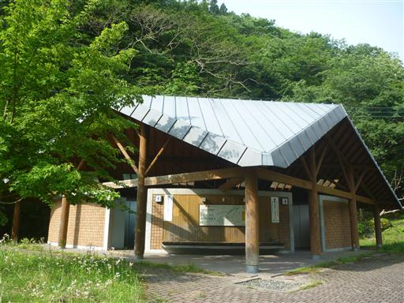
歩き始めるとすぐに神ノ川ヒュッテに到着する。
営業しているのかどうかわからないが、人の気配はない。
比較的マイナーな山のマイナーな登山口、利用者はどの程度いるのだろう？
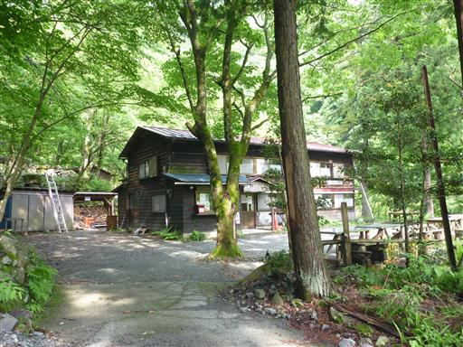
日陰沢新道との分岐点に案内標識が出ている。
ここで林道を右に折れて日陰沢を渡る。
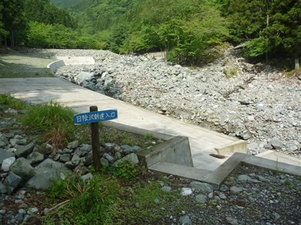
水量はあまり多くなく、簡単に渡ることができる。
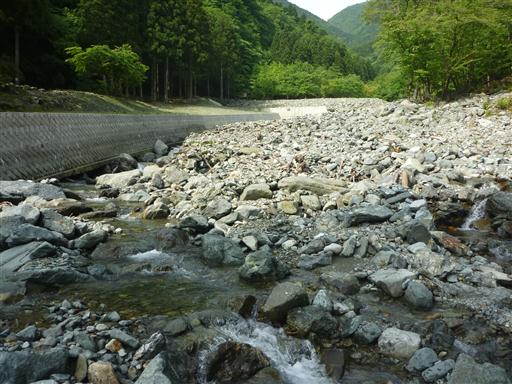
植林地帯のなかを登っていく。1時間はこの景色が続く。
北丹沢12時間山岳耐久レースのコースに指定されているため、道は比較的整備されている。
ところどころで練習中のランナーとすれ違う。
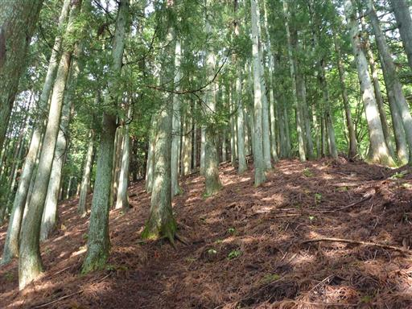
標高を上げると草付きの斜面になる。この辺りに草を食べるシカはいないのだろうか？
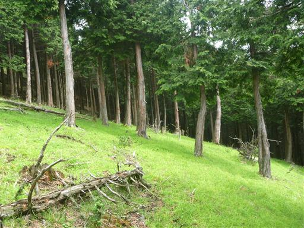
分岐点に到着。ここで鐘撞山からの道と合流する。
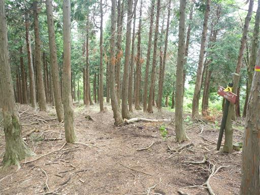
ここから大室山まで尾根道を登っていく。ようやく植林地帯から解放される。
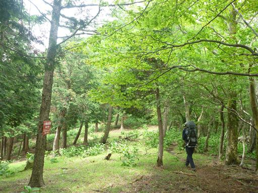
檜洞丸方面を望む。今日の天気は曇りで山頂部は雲の中のようだ。
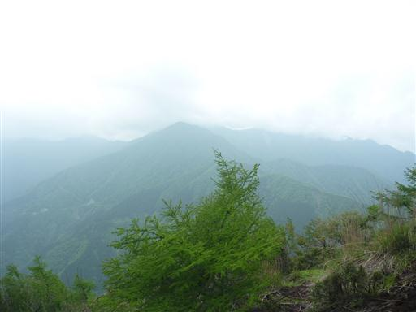
この尾根道は人通りが少ないのか、あまり整備されていない。
倒木が多く踏み跡は細い。もっとも、尾根を登っていくだけなので、ルートを大きく外す心配はない。
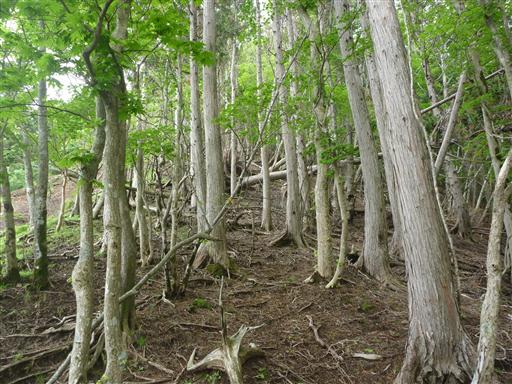
ツツジの花が咲いている。そろそろツツジも見納めだ。
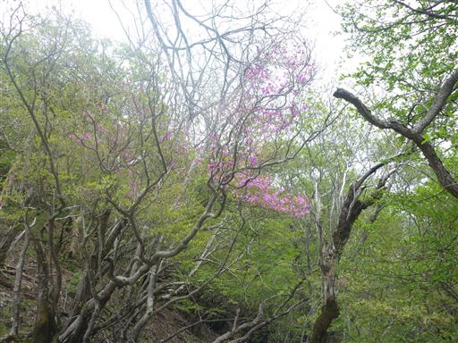
山頂に近づくと、あたりは足の踏み場もないくらいのバイケイソウの群落に包まれる。
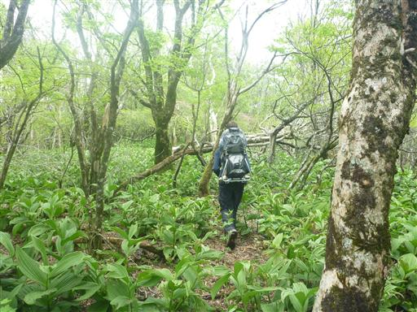
大室山山頂に到着。標高1588m。
山頂にはぽつりぽつりと登山者が登ってくるが、
なぜかだれも山頂で昼食をとらずに下って行く。
我々は腰をおろして昼食をとることにする。
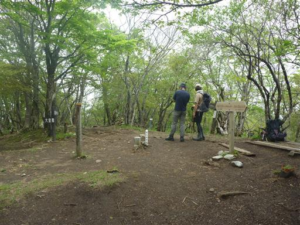
昼食をとったら下山にかかる。
真中に穴の開いた巨木が立っている。まだ生きているようで、枝には葉をたくさん付けている。
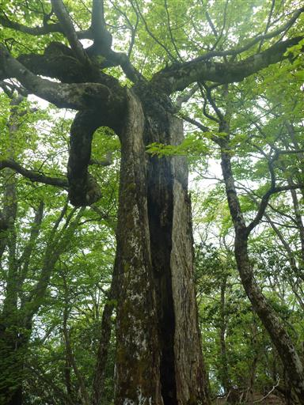
山頂からの下りは美しい樹林帯の道が続く。
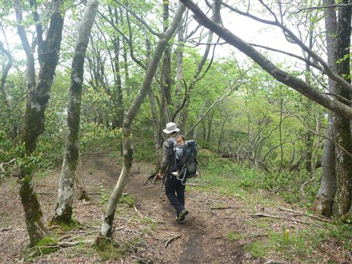
5分ほどで分岐点に到着。
ここにはテーブルがあるため、多くの人はここで昼食をとるのだろうか？
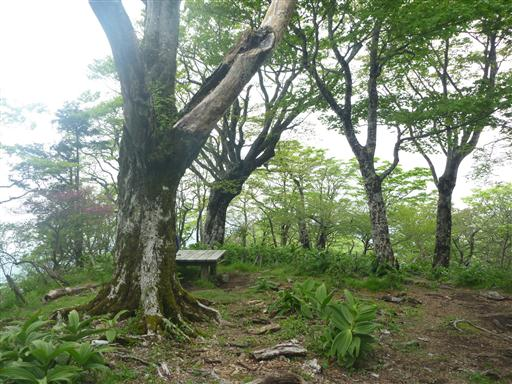
下り道にもバイケイソウの群落が広がっている。
こちらの道は人通りが多いため踏み跡はできている。
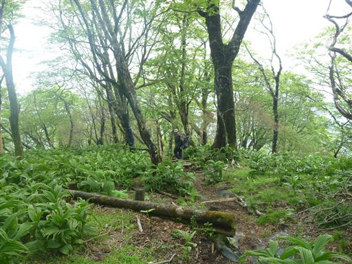
一箇所小規模な岩場がある。
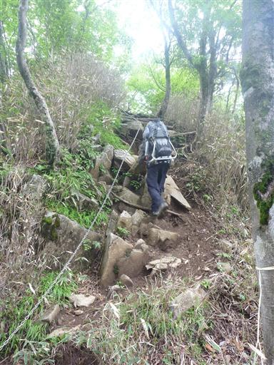
歩きやすい尾根道を下って行く。所々で人とすれ違う。
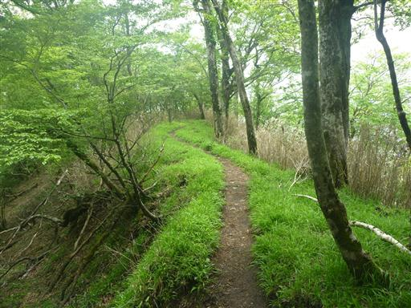
犬越路に到着。
ここは登山道の交差点。多くの登山者が休んでいる。
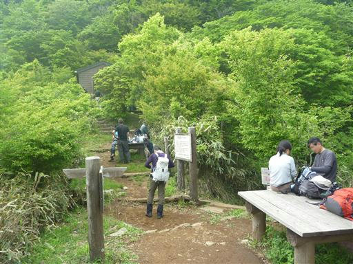
少し休憩を取った後、日陰沢橋へ下る沢道に入る。
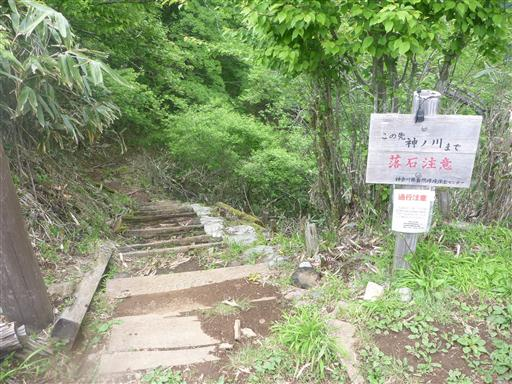
沢を渡るが、水は流れていない。
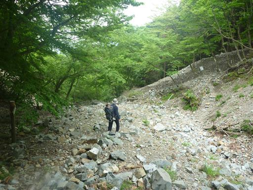
かなりの急斜面のジグザグ道を下って行く。
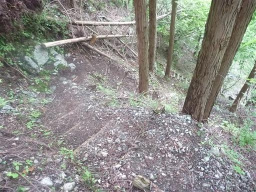
比較的整備されているが、少々スリルのある登山道だ。
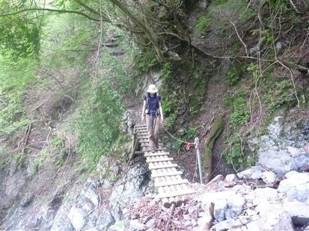
不思議な模様のある葉を発見。何の葉だろうか？
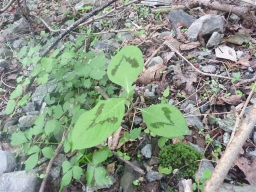
林道に下り立つ。あとは林道を歩いていく。
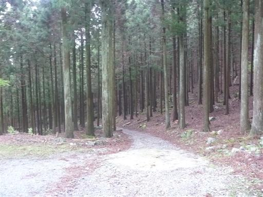
登りに使った道と合流し、日陰沢登山口に到着する。
展望はあまり望めなかったが、良い運動になる登山だった。
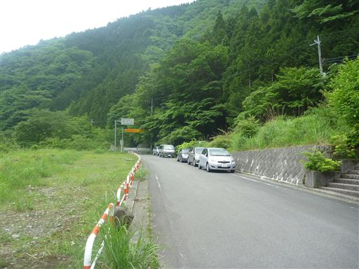